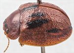
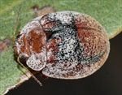
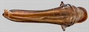
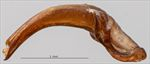
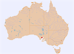

Click on images to enlarge
{kind=link}

Male, Cowell, Eyre Peninsula, South Australia
{kind=link}

Male, Cowell, Eyre Peninsula, South Australia
{kind=link}

Aedeagus, dorsal view (Cowell, South Australia)
{kind=link}

Aedeagus, lateral view (Cowell, South Australia)
{kind=link}

Distribution
Name
Trachymela creberrima (Blackburn)
Reference specimen
2017-110b, Cowell, Eyre Peninsula, South Australia.
Adult Description
Length: ♀ 8.6-9.3 mm [2], ♂ 7.6-8.1 mm [3].
Colour: head: mid- to dark-brown, sometimes almost uniformly so, sometimes with a pair of black patches behind fronto-clypeal suture, one on each side between eye and central suture, labrum usually paler or straw-brown, mandibles dark-brown with black tips; antennae usually completely straw-brown or light-brown, rarely grading to a fractionally darker shade at distal antennomeres; pronotum: brown, similar shade as head, sometimes with diffuse, indistinct darker patches, rarely with black spot in foveal depression; scutellum: brown, same shade as adjacent area of pronotum, usually with lateral edges narrowly edged in darker brown; elytra: brown, similar shade as pronotum, with 4 broad bands of black positioned as (1) along elytral suture extending from scutellum to elytral summit, (2) along VR3, from directly above humeral callus to below elytral summit, (3) along the region from VR5 to VR7 and extending from humeral callus to just behind middle of disc, and (4) just inside edge of elytral disc, extending from in line with elytral summit some or all the distance to elytral apex, bands (2) and (3) and less often band (1) may be joined into a larger black region by black colour in the post-median depression, band (4) is sometimes quite thin and partially discontinuous; punctures similar in colour to surrounding interstices, humeral callus same shade as surrounds; venter: head, thoracic ventrites and legs mid-brown, rarely partially dark-brown, abdominal ventrites of slighly paler shade, inside surface of elytral epipleura brown. Cuticular wax: head, pronotum and anterior half of elytra, up to about level with elytral summit, evenly to somewhat unevenly scattered with greyish wax, in the posterior half of elytra the wax is light brown.
Shape: slightly gibbous, with elytral summit elevated well above anterior margin (H/BL ♂=0.45-0.47, ♀=0.44-0.45), highest point clearly in front of middle of elytral margin. Head; punctures moderately sized (pd~2-2.5xef) and quite evenly and densely packed. Antennae moderately long (AL ♂=38-41%BL, ♀=35-37%BL), A4~A3, filiform. Pronotum; almost evenly curved transversely over disc, very slightly explanate at margins, foveal depression moderate to slight but always present and without or very small central elevation, puncturation clearly impressed, similar in size but sometimes fractionally less densely packed than those on head, usually evenly-sized, relatively evenly distributed, interstices usually relatively smooth, rarely slightly rugose, but never obliterating the punctures, punctures become coarser, sometimes much coarser, towards lateral margins. Front margins join lateral margins in a very smoothly rounded right-angle, with lateral margin straight for initial 40-50% of length before curving smoothly and gradually towards the much thicker rear margin. Scutellum; surface smooth to slightly shagreened, usually unpunctured, less often with a few shallow punctures. Elytra; surface evenly curved transversely, punctures usually partially or wholly obliterated by a rough surface consisting of interstices raised into short ridges that may run longitudinally or transversely, punctures rarely distinct, some small and relatively inconspicuous verrucae, each with a fine central puncture, are usually scattered among these, often most obvious in the posterior half of elytra by their linear arrangement in VR3-VR7, lateral margins very slightly explanate, surface discontinuous, sometimes very slightly, under humeral callus, lateral margin straight posteriorly with anterior half angled upwards. Vertical extension of epipleura very large (HCE/PW=0.40-0.44). Venter; prosternal process narrowest anteriorly, open or very lightly closed anteriorly, at most a sparse scatter of short setae on prosternal process and mesosternum, a single seta on anterior and median trochanter; front edge of metasternum beveled, truncate; posterior section of epipleura lacking setae. Aedeagus; relatively short (LPE=25-27%BL), in dorsal view, widest near junction of basal and central sections (WPE = 0.25-0.29*LPE) then narrowing gradually until about halfway to apex where sides become parallel, sometimes even widening fractionally, to about middle of ostium from where sides converge very gradually towards apex, tip triangular and small, dorsal surface lightly sclerotized, dorsal ostial processes very long, ostial opening relatively small; in lateral view, evenly and gently curved over all of its length, tip slightly deflexed.Larvae
unknown.
Eggs
unknown.
Similar species
Ta117 – the texture of the pronotum and elytra are very similar in this species, and both have been collected from mallee Eucalypt species in section Dumaria. The black markings on the elytral disc are in different positions, though Ta117 sometimes also has broad black borders to the elytral suture between the scutellum and summit. The aedeagus is quite different between the two species.
Notes
Ta152 is identified as Trachymela creberrima (Blackburn) by comparison with photos of the creberrima type specimen (in BMNH). Individuals have been found on Eucalyptus phenax (Symphyomyrtus: Dumaria).
Copyright © 2026. All rights reserved.